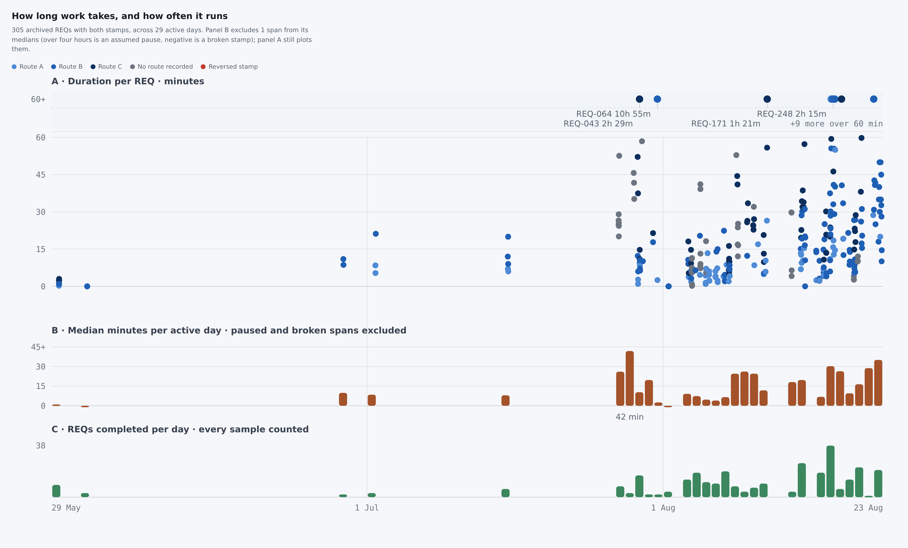
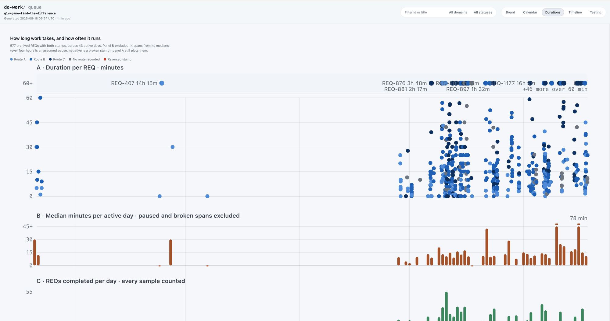

Proposal · Kanban board · Durations view
2026-08-23 · eight findings, eight capture-request prompts, one bundled request · written before any implementation
This is a design proposal, not a completed-work report: nothing here has shipped, and every proposed rendering below is a mockup rather than a screenshot of the board.
Verdict
The panel does the job it was built for. It shows the distribution of REQ durations over real calendar time, and the idle gaps in that axis are a genuine finding about cadence.
It cannot answer a UR question, and that is a data-plumbing accident rather than a design choice: the Durations payload carries id, route, completionTime, dayKey, wallMinutes and nothing else, so the REQ → UR link every other view uses is simply absent from the dot cloud. The link is already in the browser — boardData.requests[id].userRequestId — so UR identity is a renderer change, not a new walk of the archive.
Two structural problems sit behind that. Two thirds of the axis is idle calendar, so the samples crowd into the right third; and more than half of them sit in the bottom quarter of panel A's linear 0–60 scale. Both waste the space that would make the dots readable.
Recommended order: A1 (UR identity) and A2 (a UR-level panel) first, then A4 (scale and density) and A3 (an axis window). A5 removes more code than it adds.
Measured by building the tool at skills/do-work-board/tools/queue-kanban and reading the generated board-data.js for this repository. The consuming project's own board reports 692 samples across 47 active days.
Three stacked panels share one linear real-time axis. A plots one mark per archived REQ that carries both a claim and a completion stamp, coloured by route, with a 60-minute ceiling and an overflow lane above a scale break. B plots the median minutes per active day, excluding spans over four hours (assumed pauses) and negative spans (broken stamps). C counts completions per day. A hover surface writes one line of text; a collapsed <details> holds every sample as a table.
The machinery is not naive. Label placement measures its own text in the browser, packs two rows per band, reserves room for the remainder sentence in a loop that runs to a fixed point, and counts whatever it could not place. Panels A and B disagree about which samples count on purpose, and the rule lives in one place.
What follows is not a complaint about that work. It is what the view still cannot answer at 300 samples, and what it stops answering at 700.

Ranked by how much they block a question a maintainer actually asks. Every figure is measured from this repository's generated board data or read from the consuming project's own screenshot; file references are to skills/do-work-board/tools/queue-kanban/.
The Durations view is the only view that drops the REQ → UR link. Its payload sample is five fields wide and none of them is the UR, even though every parsed ticket carries UserRequestId and the board builds a UR node with its REQ list. 66 URs are in this repository's 305 samples; a median of 2 and a maximum of 10 are active on the same day, so the dots of three or four different requests are interleaved in every dense column with nothing to tell them apart.
generate.go:261–268 · durations.go:35–58 · model.go:273 · the client already holds the join at boardData.requests[id].userRequestId
Only REQs are measured, so the unit the maintainer plans in is invisible. Computed from the same tickets: 65 URs have measurable spans, the median UR takes 0.6 hours end to end but the p90 takes 46.7, and the largest ones (UR-031 at 27 REQs, UR-042 at 22, UR-055 at 18) spend 11–14% of their elapsed span in measured REQ work. That gap between elapsed and worked is a real property of the pipeline and nothing on the board shows it.
Derived from claimedAt/completedAt per REQ grouped by userRequestId; no field the board does not already parse
The axis is linear real time on purpose — compressing idle gaps would destroy the cadence answer — but the panel pays the full price at every window width. Here the axis spans 86 days of which 29 are active, and 92% of the samples fall in the final 30 days. On the consuming project a single April outlier (REQ-407) holds the left half of the plot open on its own. There is no way to narrow the window.
web/board-durations.js:1–15 (the stated rationale) and its timeStart/timeEnd domain, fixed to the full sample range
Median 13.2 minutes, 55% under 15, 78% under 30, against a linear 0–60 scale: more than half the marks compete for the bottom quarter of the panel. Horizontally the plot gives a day 13 SVG units here and about 8 on the consuming project, so a busy day (38 REQs here, 55 there) is a single column of overlapping 4-unit dots. There is no opacity, no jitter, no density encoding, and no drawn trend — the shape of the distribution is only reachable by hovering one mark at a time.
web/board-durations.js yOfMinutes (linear to a 60-minute ceiling) · mark radius 4 · DURATIONS_PLOT_WIDTH 1128 units over the whole axis
On the consuming project's board the lane shows five labels and +55 more over 60 min; here it shows four and +9 more. Behind those four labels sit browser-measured text widths, a greedy two-row packer, a remainder reserve that runs to a fixed point, and geometry-agreement tests pinning the Go constants against the renderer's. The machinery is correct. It is buying a 7% labelling rate on the data it now has, and every sample it labels is also one row of the table below.
web/board-durations.js:196–345 (placement) · durations.go:180–244 (label text and width model) · REQ-226, REQ-231, REQ-237, REQ-241, REQ-292
The text filter, domain select and status select stay visible and live while Durations is on screen, and change nothing there. This is not an oversight in one place and a decision in another: applyView hides the lens and recent-window groups on other views with the comment that the topbar should never advertise dead knobs, and onFiltersChanged deliberately excludes Durations because a filtered distribution is a different statistic wearing the same axes. The conclusion was reached; the controls were left on screen.
web/board-controls.js:33–37 · web/board-filters.js:146–160
The summary line gives counts and the exclusion rule, and that is all. The median, the p90, the completions-per-active-day rate — the numbers a reader opens a durations view for — appear nowhere; panel B annotates exactly one day (its slowest) and draws no trend, and panel C labels only its peak, with no zero tick and no gridline. Every one of those figures is derivable from the payload already shipped.
web/board-durations.js summary composition · drawDurationsSlowestDayAnnotation · panel C's single tick at peakCount
The nearest-mark hover writes one line into a status paragraph and nothing more happens: no click target, no route into the detail drawer the board and timeline views both open, and no keyboard path except the table inside a collapsed <details>. Having identified an outlier, the reader has to leave the view and search for its id by hand.
web/board-durations.js hover surface: mousemove and mouseleave only

Both mockups below are drawn by a throwaway script from this repository's real 305-sample archive, in the same SVG idiom the view uses. They are not renders of the shipped board — no code has changed — but the data in them is real, so their density and label collisions are the ones an implementation would actually face.
P1 + P3 + P4 · one panel, three changes
Mockup · real data · not the shipped rendererP2 · a UR-level panel
Mockup · real data · not the shipped rendererP5 · what replaces the in-lane labels
Every over-ceiling sample, longest first, with the UR and the title the label rows cannot fit. This is HTML beside the chart rather than text inside the SVG, so it needs no width measurement, no packing, and no remainder sentence — and it is complete, where the lane is at 7%.
| REQ | UR | Span | Route | Title |
|---|---|---|---|---|
| REQ-064 | UR-010 | 10h 55m | B | Restore blanked archived REQs from git history |
| REQ-043 | UR-008 | 2h 29m | C | Worktree evidence-range hardening |
| REQ-248 | UR-051 | 2h 15m | B | Anchor the Durations day buckets to UTC midnight |
| REQ-249 | UR-055 | 1h 59m | B | Decide the cross-package citation path form |
| REQ-257 | UR-056 | 1h 42m | B | Decide whether the timestamp repairer learns offset |
| REQ-246 | UR-056 | 1h 40m | C | Repair detectably wrong queue and working timestamps |
| REQ-171 | UR-038 | 1h 21m | C | Promote prescribed shell primitives to shipped docs |
| REQ-260 | UR-051 | 1h 20m | A | Run the Go formatter as part of the canonical verify |
| REQ-319 | UR-065 | 1h 17m | B | List only the REQs the selected window covers |
| REQ-245 | UR-055 | 1h 9m | A | Name fabricated stamps in future-stamp warnings |
| REQ-243 | UR-042 | 1h 9m | B | Check that shipped markdown pointers resolve |
| REQ-241 | UR-051 | 1h 8m | B | Reconcile the Durations label metrics with the face |
| REQ-289 | UR-060 | 1h 6m | C | Separate impact from effort with unique tokens |
boardData.requests. Four of these thirteen carry a label on the board today; the other nine are the +9 more.What P5 deletes
A1 through A4 add code. A5 is the one proposal that removes more than it adds, and that is most of its value:
durations.go's label-text and width model, including the documented hyphen-versus-minus divergence it carriesWhat stays: the lane, the marks, their hover, the remainder count as a plain sentence. The overflow lane itself is not the problem — putting variable-width text inside it at this density is.
This is a deliberate reversal of a settled decision, so it is worth stating plainly: the 2026-08-18 proposal offered this shape as its fourth alternative and the separated-band fix was chosen instead. That fix worked. The argument for revisiting it is not that it failed but that the sample count has since made 55 of 60 labels unprintable.
One prompt per change, ranked. Each is a complete do-work capture-request: invocation — paste it as it stands. They are independent: queueing A1 alone is a coherent change, and so is queueing A5 alone. A single bundled request covering all eight follows at the end.
Closes F1. The join already exists in the browser, so this is a renderer change first and a payload change only if the join proves awkward.
do-work capture-request: The Durations view is the only board view that drops the REQ-to-UR link, so panel A's dot cloud cannot say which user request a mark belongs to — 66 URs are in this repository's 305 samples and a median of 2, up to 10, are active on the same day. Give the Durations view UR identity. The client payload already carries the join at boardData.requests[id].userRequestId, so prefer a client-side join and add the field to generatedDurationSample in generate.go only if that proves awkward. Name the UR in the hover readout beside the REQ id, add a UR column to the "Every sample, as a table" table, and draw a UR grouping lane under panel A: one horizontal bracket per UR spanning its samples' completion times, packed into a small fixed number of rows, with every UR that finds no row counted in an explicit remainder rather than silently dropped. Leave route colour as it is.
Closes F2. The one proposal that adds a new question rather than making an existing answer readable.
do-work capture-request: Durations measures REQs only, so a UR's own duration is unmeasurable from the board. Add a panel D to the Durations view: one mark per UR on the shared calendar axis, positioned at the UR's last REQ completion, drawn as a stem from the summed measured REQ work at the bottom up to the elapsed calendar span from first REQ claim to last completion at the top, on a log hour scale, with the top mark's radius carrying the UR's REQ count. The gap between the two ends is the point: on this repository's archive the median UR spans 0.6 hours against a p90 of 46.7, and the largest URs (27, 22 and 18 REQs) spend 11 to 14 percent of their elapsed span in measured REQ work. Apply the same read-time exclusion rule the other panels use, keep one measure per scale, state in the panel subtitle what each end of a stem means, and say explicitly in the REQ how this differs from the Timeline view's REQ Gantt so the two views do not converge.
Closes F4. Biggest legibility gain per unit of work, and it does not touch the payload.
do-work capture-request: Panel A of the Durations view wastes its vertical range and overplots. On this repository's archive the median REQ is 13.2 minutes with 55 percent under 15 and 78 percent under 30, so against a linear 0-to-60 scale more than half the marks compete for the bottom quarter of the panel, and at 8 to 13 SVG units per day a busy day (38 REQs here, 55 on the consuming project) is one column of overlapping 4-unit dots. Change panel A to a square-root y scale with ticks at 0, 5, 15, 30, 45 and 60; add a deterministic within-day x jitter bounded to the day's own slot so a mark can never cross a day boundary; lower mark opacity; and draw a per-day median line with a p25-to-p75 ribbon behind the marks so the trend is readable without hovering. Keep the 60-minute ceiling, the overflow lane and the read-time rule unchanged, and keep the jitter out of the hover's nearest-mark maths or state how it is compensated.
Closes F3 without touching the linear axis the cadence finding depends on.
do-work capture-request: The Durations axis spends most of its width on idle calendar: on this repository's archive 66 percent of the 86-day axis has no completions and 92 percent of the samples fall in the final 30 days, and on the consuming project a single April outlier holds the left half of the plot open by itself. Add a window control to the Durations view offering the last 30 days, the last 90 days and all history, and state the active window and the sample count it covers in the view's summary line. Keep the axis linear real time inside the window — the idle-gap cadence reading is why it is linear, so do not compress gaps — and reuse the topbar's existing recent-window control pattern rather than inventing a second one. Panels B and C follow the same window.
Closes F5, and deletes more than it adds. Reverses a decision taken on 2026-08-18, so it needs an explicit yes.
do-work capture-request: The Durations overflow lane's direct labels have stopped paying for themselves at scale — the consuming project's board shows 5 labels beside "+55 more over 60 min" and this repository's shows 4 beside "+9 more", a 7 percent labelling rate — while the machinery behind them (browser-measured text widths, a greedy two-row packer, a remainder reserve run to a fixed point, and the geometry-agreement tests pinning durations.go's constants against web/board-durations.js) is the largest single piece of the view. Replace the in-lane labels with a compact ranked longest-spans list beside the chart, carrying REQ id, UR id, duration, route and title, longest first, with every over-ceiling sample present. Keep the lane, its marks, their hover and a plain remainder count. Delete the label planner, the label-text and width model in durations.go, and the constants and tests that exist only to place text inside the SVG, and name in the hand-back exactly which tests were removed and why they no longer describe a shipped rule. This deliberately reverses the separated-text-band direction chosen on 2026-08-18; that fix worked, and the reason to revisit it is the sample count, not a defect.
Closes F7. Every figure comes from the payload already shipped.
do-work capture-request: The Durations view makes a reader hover to learn its own headline numbers. Add a small stat tile row above panel A carrying the median REQ duration, the p90, the active-day count against the axis span, and REQs per active day, each stated for the window actually plotted rather than for all history. Give panel B a rolling median line over its per-day bars so "is it getting slower" is answerable without reading 29 bars one at a time, and give panel C the zero and midpoint ticks it lacks — today only its peak is labelled. Derive every figure from the samples already in the payload, keep one measure per scale, and keep the existing summary sentence's exclusion-rule wording intact.
Closes F6. The smallest change in the set; it applies a rule the code already states.
do-work capture-request: The topbar's text filter, domain select and status select stay visible and live while the Durations view is on screen and change nothing there. That is inconsistent with the board's own stated rule: applyView in web/board-controls.js hides the lens and recent-window groups on views where they do nothing, with the comment that the topbar should never advertise dead knobs, and onFiltersChanged in web/board-filters.js deliberately excludes Durations because a filtered distribution is a different statistic wearing the same axes. Hide the three filter controls while Durations is the active view, the same way the lens group is hidden, and restore them on view change. If a filtered durations distribution is wanted later, that is a separate request with its own caption rules, not a silent widening of this one.
Closes F8. Depends on nothing else in the set.
do-work capture-request: A Durations mark is a dead end — the nearest-mark hover writes one line into a status paragraph and nothing opens. Make a click on panel A's hover surface open the detail drawer for the nearest REQ, the same drawer the board and timeline views open, and give the view a keyboard path to the same information: the sample table is the only keyboard route today and it sits inside a collapsed details element. Keep the hover readout exactly as it is, and keep the click's nearest-mark resolution consistent with the hover's so a reader never opens a REQ other than the one the readout names.
| Prompt | Files | Size | Risk | What it forces |
|---|---|---|---|---|
| A1 | board-durations.js, template.html, board.css; generate.go only if the join is awkward | Moderate | Low | A lane-packing remainder count, and a decision on how many rows the lane gets |
| A2 | durations.go, generate.go, board-durations.js, template.html | Largest | Medium | A new aggregate, a log scale, and a written boundary against the Timeline view |
| A4 | board-durations.js (and the geometry tests that read its constants) | Moderate | Medium | Hover nearest-mark maths under jitter; browser probes for the new scale's tick positions |
| A3 | board-durations.js, template.html, board-controls.js | Moderate | Low | Window state shared with, or deliberately kept separate from, the board's own window control |
| A5 | board-durations.js, durations.go, durations_test.go, the browser probe lane, template.html | Net deletion | Medium | Naming every removed test and why it no longer describes a shipped rule |
| A7 | board-durations.js, template.html, board.css | Small | Low | Whether the tiles follow A3's window or all history |
| A6 | board-controls.js | Smallest | Low | Nothing; it applies an existing rule |
| A8 | board-durations.js, board-detail.js | Small | Low | Keeping click and hover resolution identical |
Sizes are relative to each other, not estimates in hours. Every one of these touches a chart, so the repository's own standing rule applies: generate a board and look at it, because a passing suite is not evidence about two glyphs sharing a coordinate.
Capture splits a compound input into separate REQs, so this single invocation produces one UR with the eight changes under it. Use it instead of the eight above, not as well as them.
do-work capture-request: Improve the board's Durations view so it answers UR-level questions and stays legible at 700 or more archived REQs. It is the only view that drops the REQ-to-UR link, so give its samples their UR: name the UR in the hover readout, add a UR column to the sample table, and draw a packed UR grouping lane under panel A with an explicit remainder for any UR that finds no row — the client already holds the join at boardData.requests[id].userRequestId. Add a panel D measuring URs themselves: one stem per UR at its last REQ completion, from summed REQ work up to elapsed calendar span, log hours, radius by REQ count, and say in the REQ how it differs from the Timeline's REQ Gantt. Fix panel A's density: square-root y scale with ticks at 0, 5, 15, 30, 45 and 60, deterministic within-day jitter bounded to the day slot, lower mark opacity, and a per-day median line with a p25-to-p75 ribbon. Add a window control for the last 30 days, last 90 days and all history that keeps the axis linear real time inside the window and states the active window in the summary. Replace the overflow lane's in-lane labels with a ranked longest-spans list beside the chart carrying REQ, UR, duration, route and title, and delete the label planner, its width model and the tests that exist only to place text inside the SVG. Add a stat tile row for median, p90, active days against axis span and REQs per active day, a rolling median line on panel B, and the missing zero and midpoint ticks on panel C. Hide the text filter, domain select and status select while Durations is on screen, since they change nothing there and the board's own rule is that the topbar never advertises dead knobs. Make a click on a mark open the detail drawer for the nearest REQ and give the view a keyboard path that does not require opening the collapsed sample table.
The Timeline already draws REQ bars against calendar time and projects the queue forward. Panel D is a distribution, not a schedule, and it is UR-grouped where the Timeline is REQ-rowed — but the two would sit one tab apart showing the same tickets against the same axis. The alternative is a UR row grouping on the Timeline and no panel D at all.
A3 reuses the recent-window pattern. Whether it reuses the value is a different question: one window across board and durations is fewer knobs, but the board's window means "recently done" while durations' means "the axis domain", and conflating them would make the durations axis change when someone adjusts a board filter.
The lane answers "which dots are one UR" positionally, which scales past 60 URs where a colour channel does not. A colour-by toggle (route / UR / domain) would answer it inside the plot, at the cost of a second identity channel competing with route. The mockup takes the lane alone; it is the cheaper half and it is reversible.
Three rows placed 54 of 61 URs on 30 days of this repository's data. The consuming project has more URs in the same window. Fixed rows plus a counted remainder is the pattern the view already uses; a scrollable lane is the other option and it is new machinery.
Everything below was run from the repository root while writing this report. The numbers in the tiles and findings come from the last two commands.
cd skills/do-work-board/tools/queue-kanban && go build -o /tmp/queue-kanban .
/tmp/queue-kanban generate --out /tmp/board --repo-root "$PWD"
# → wrote static board (333 REQs, 67 URs); durations payload lives in /tmp/board/board-data.js
# distribution, axis waste, UR spread — reads window.queueKanbanBoardData
node -e 'global.window={};eval(require("fs").readFileSync("/tmp/board/board-data.js","utf8"));
const d=window.queueKanbanBoardData,s=d.durations.samples;
const m=s.map(x=>x.wallMinutes).sort((a,b)=>a-b),q=p=>m[Math.floor(p*(m.length-1))];
console.log("n",s.length,"median",q(.5).toFixed(1),"p90",q(.9).toFixed(1),
"under15",(m.filter(x=>x<15).length/m.length*100).toFixed(0)+"%",
"over60",m.filter(x=>x>60).length,"days",d.durations.days.length);'
# the UR link the Durations payload does not carry, joined client-side
node -e 'global.window={};eval(require("fs").readFileSync("/tmp/board/board-data.js","utf8"));
const d=window.queueKanbanBoardData,r=d.requests;
const urs=new Set(d.durations.samples.map(s=>r[s.id]&&r[s.id].userRequestId).filter(Boolean));
console.log("distinct URs among durations samples:",urs.size);'
Not run: bash _dev/tests/maintainer-verify.sh. No source file was changed for this report, so there is nothing in it for the suite to check.
Bundle: ai-reports/2026-08-23_2200_durations-panel-improvement-proposal/ · two authentic captures in screenshots/, two inline mockups drawn from real archive data by a throwaway script, no generated raster images.
Rendered and inspected at 1920px in both light and dark before hand-back.